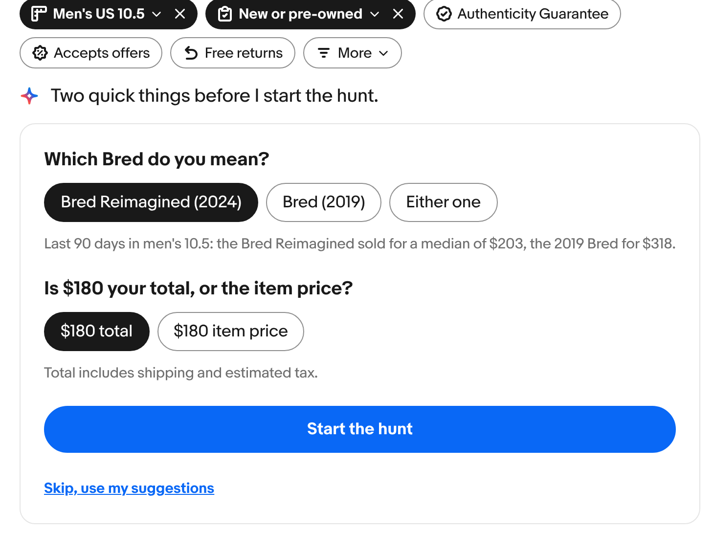
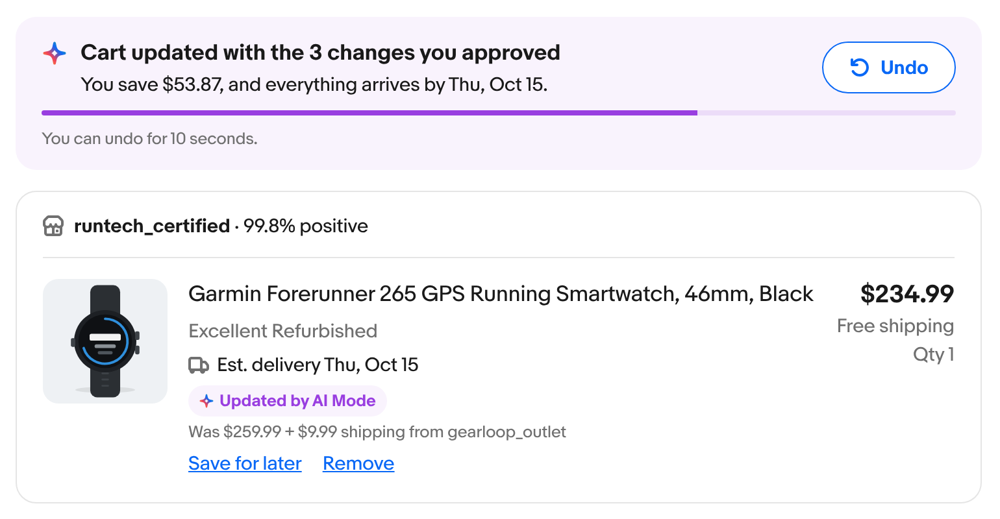
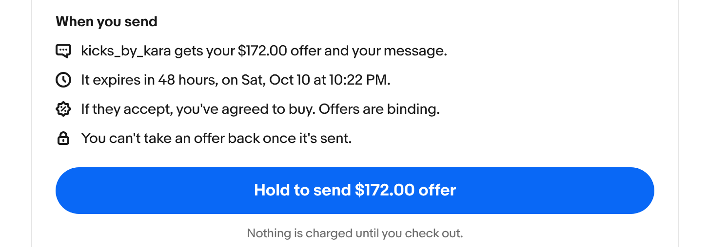
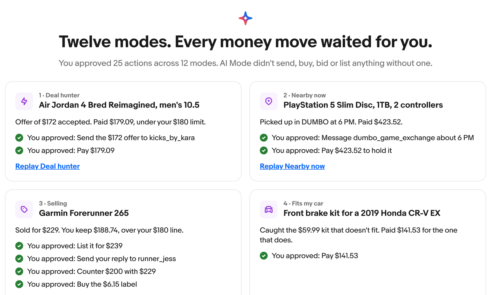

eBay AI Mode
eBay's strengths, one-of-a-kind listings, Best Offer, auctions and 90-day sold history, leave buyers and sellers doing the judgment work alone. I reframed the problem, ranked 13 ideas by what only eBay can do, wrote one trust rule every flow follows, and designed a working prototype of 12 modes where nothing that moves money happens without the person's tap.
An agent can take on the work only once we agree what the person still decides. Here, that's the whole commitment: every binding obligation, the worst-case money out, and when it ends.
If a general assistant, a search engine or a big retailer could stage the same demo next quarter, it doesn't go first.
People learn a gate by recognizing it. The same trust rule and the same gate run through all 12 modes, so the third approval reads as fast as the first.
eBay's best assets create the most work for the person.
The brief was to design an AI mode for eBay, like the ones Newegg and Alibaba launched. I started by asking what makes eBay different, and found that the same things also push the work of judgment onto people.
One-of-a-kind and pre-owned inventory, condition that changes listing by listing, thousands of independent sellers, Best Offer, auctions and Authenticity Guarantee. Each one adds a question, and today people answer them in open tabs and a watchlist.
They overpay to remove the doubt, or leave with the item still on the watchlist.
Casual sellers list on a local app instead, or misprice once on eBay and don't come back.
Two people who fail in opposite directions.
I picked two archetypes because the program needs both, and an agent that serves one can easily fail the other. One wants control at every step. The other wants to stop babysitting.
They know what they want: a Jordan 4 in men's 10.5, a brake kit for their car. The job isn't discovery. It's being sure enough to commit.
They have one thing to sell and know roughly what they need in their pocket. The job is the outcome, not the listing.
I ranked 13 ideas by what only eBay can do.
Thirteen buyer prompts came in. I scored each from 1 to 5 on three lenses, weighted for the question a CEO would ask: is agentic commerce an eBay advantage, or a feature every marketplace gets?
Conversion, supply or fewer returns, in categories eBay has said it's focused on.
Does it depend on assets only eBay has: Best Offer, auctions, sold history, fitment data, Authenticity Guarantee?
Does it land in two minutes, with a visible moment of judgment and a beat where the agent says no?
Two prompts merged into others and one seller flow was new, so 12 candidates were scored. Scores are directional, not a forecast.
One rule decides when the agent acts and when it asks.
Confidence × stakes × reversibility. I wrote it once into the build standard, and every flow inherits it unchanged. It's the single idea the whole program is selling, so it doesn't vary.
Two quick questions, each one that visibly changes the result. Here: which Bred, and is $180 the total or the item price?

The cart changes the shopper approved, with what they saved and an Undo that lasts 10 seconds. Undo appears only where the change can truly be undone.

Offers, counters, bids, purchases, listings, seller messages and returns. The gate says who gets what, when it expires, that it's binding, and that it can't be taken back.

When a review showed the spec allowed harm, I rewrote the problem, not just the bugs.
A principal-level design review of Version 19 found 6 P0, 48 P1 and 13 P2 issues. All six P0s were fixed in Version 20. But the spec had allowed them, which meant my first problem definition was too loose to build against. No single step looked wrong. Each failure only showed up across steps.
Make an offer sent offers to two sellers. If both accepted, the buyer could owe $461.25 against a $250 limit, and the gate never said so.
The agent said “no visible wear” while its own audit found toe creasing and heel drag.
“Pre-owned is fine” was read as “exclude new.” The best listing on the screen, cheaper and badged, was never compared.
I added 17 components so 12 modes read as one product.
The same review found one trust role built three or four ways: irreversible gates three ways, status notices four ways. A gate that looks different each time has to be read each time. So I wrote a build standard that names one canonical component per role, and added 17 new families to the Evo design system's AI Mode group, each with guidelines and a live preview.
By the third gate, people pattern-match instead of read. A fixed frame makes the content that changes stand out.
Every stage was built for desktop at 1440 and iOS at 393. Each flow's spec has a stage-by-stage table of what changes between them, instead of “make it responsive.”
Twelve modes. Every money move waits for a tap.
Start on the eBay home, open AI Mode, then pick a mode or just type. Each mode ends with Next in AI Mode, so the prototype plays as one walkthrough. Pick a mode to see the moment of judgment and the moment the person decides.
{{ modeActive.label }}
{{ modeActive.desc }}
I built the story for the room it had to win.
“{{ r.line }}”
The priority and roadmap doc first, then the build standard, then one prompt per flow. Each deferred idea carried its reason and what to reuse from it.
Prices, fees, tax and totals were computed in code under a stated rounding rule. In the final build, 72 of 72 new interaction checks passed, and every stage links to the next with no dead ends.
A working prototype, and the measures that would prove it.
This is a concept with sample data. It hasn't shipped, so there are no live results to report. Here's what exists, and how I'd judge a pilot.

Design the decision first. Then the agent.
There's no user research behind this yet, and every number is sample data. Nobody has been observed at a hold-to-confirm gate, so I don't know yet whether the third gate in a session still gets read.
Define the commitment and preference types before the first build. The review found both gaps after the spec had already encoded them, and fixing a definition costs more once three flows depend on it.
The trust spine. One rule and one gate made 12 modes feel like one product, and gave every new mode a frame to inherit instead of one to invent.
A five-person test where buyers predict which listings the agent will exclude. The claim-evidence eval, while it's cheap. Two policy answers: an agent working for both sides, and whether seller acceptance history can be shown to buyers. And the three baseline numbers that could reorder the roadmap.
From “eBay needs an AI mode” to an agent that does the judgment work while people keep the decision: the framing, the ranking, the trust spine, and 12 modes on desktop and iOS.